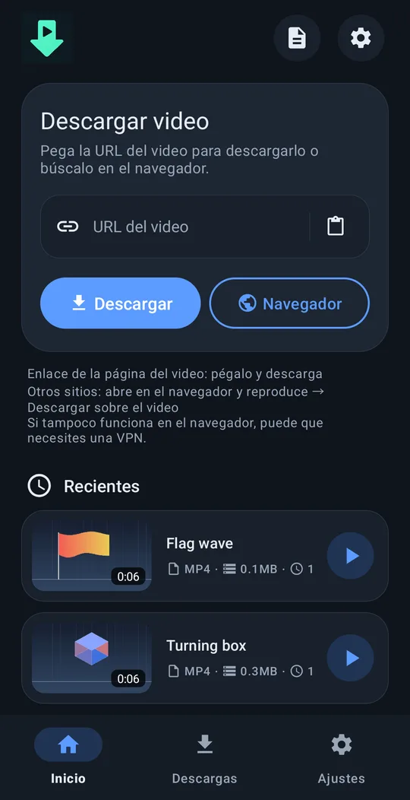
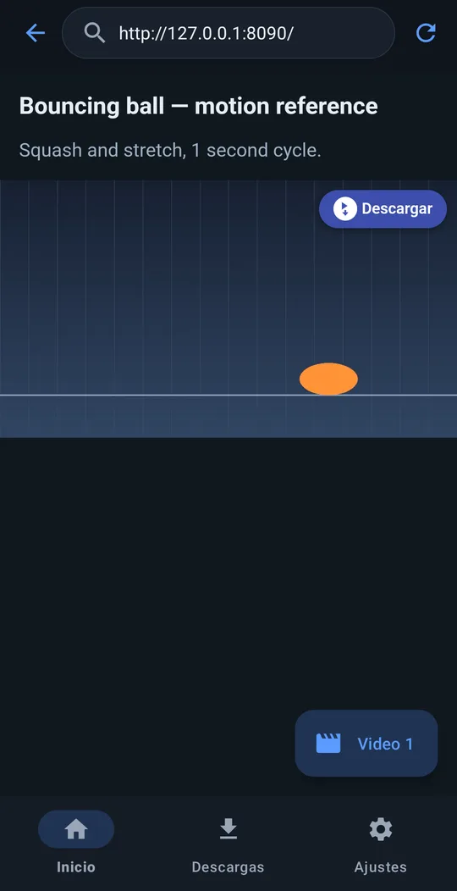
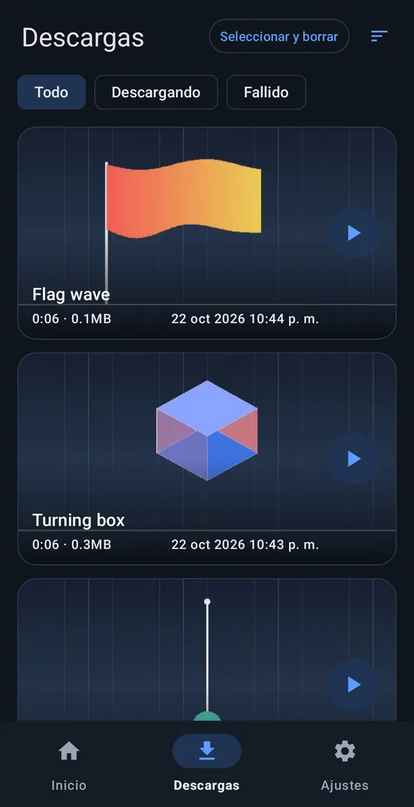
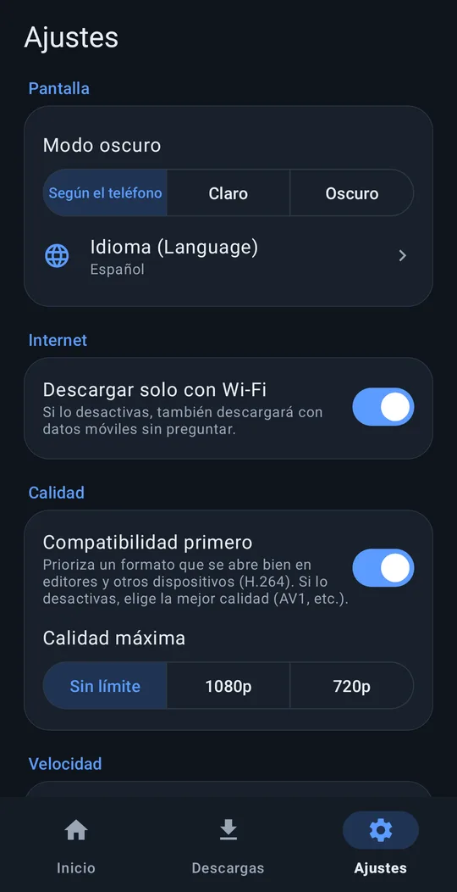

Reúne videos de referencia en tu teléfono.
Pega un enlace y descarga, o abre la página en el navegador integrado, reproduce el video y toca ⬇ Descargar encima.
Android 8.0+ · ARM de 64 bits · gratis · sin anuncios · sin cuenta
Cómo funciona




Funciones
Pega un enlace
Funciona con la mayoría de los sitios de video populares.
Botón «Descargar» sobre los videos
En el navegador integrado aparece un botón «Descargar» sobre el video que reproduce la página; funciona en muchos sitios donde el enlace no sirve.
Listo para editar
Se guarda en Movies/VideoRef. «Compatibilidad primero» elige H.264 + AAC para que las apps de edición lo abran sin problemas.
Sigue en segundo plano
Sigue descargando con la pantalla apagada. «Descargar solo con Wi-Fi» y resolución máxima.
10 idiomas
English, 한국어, 简体中文, 繁體中文, 日本語, Español, Deutsch, Français, Português (Brasil), Русский. Tema claro / oscuro.
No nos envía nada
Sin anuncios, sin seguimiento, sin cuenta.
Instalación
- Descarga el APK con el botón de arriba (o desde Releases en GitHub).
- Abre el APK en tu teléfono.
- Si te lo pide, permite que el navegador o la app de archivos instale apps desconocidas y toca Instalar.
Pronto habrá una edición en Google Play. Por la política de Play admite menos sitios y actualiza su motor de descarga solo con las actualizaciones de la app. Puedes instalar las dos a la vez.
Apoya just downloader
just downloader es gratis y sin anuncios. Si te ahorró tiempo, un pequeño aporte ayuda a la próxima actualización.
Preguntas frecuentes
¿De verdad es gratis?
Sí. Es libre y de código abierto (GPL‑3.0). Sin anuncios, sin registro, sin periodo de prueba.
¿Envía mis datos?
No envía datos personales. No llega nada al desarrollador salvo que envíes tú un informe de error. Política de privacidad
¿En qué sitios funciona?
En la mayoría de los sitios de video populares basta con el enlace. Si no funciona, abre la página en el navegador integrado, reproduce el video y toca «Descargar» sobre él. Los videos protegidos con DRM (servicios de pago) no se pueden guardar.
¿Algo salió mal?
Ajustes → Ayuda → Informar de un problema prepara un correo a support@4dir.net con el registro de la app adjunto. Si usas GitHub, también puedes abrir una incidencia: GitHub.